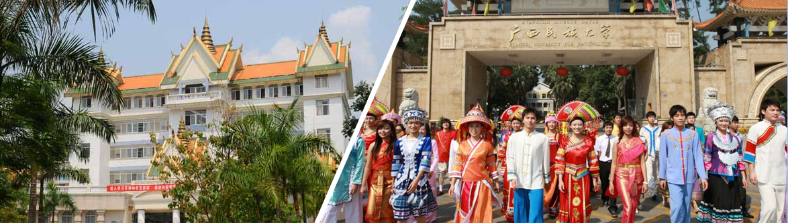
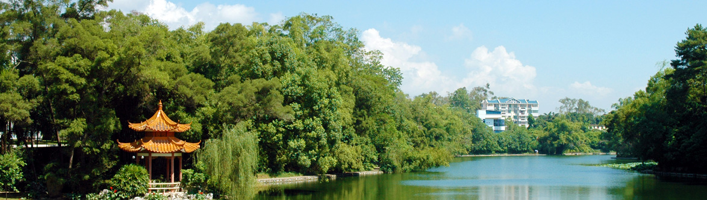
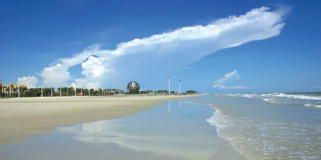
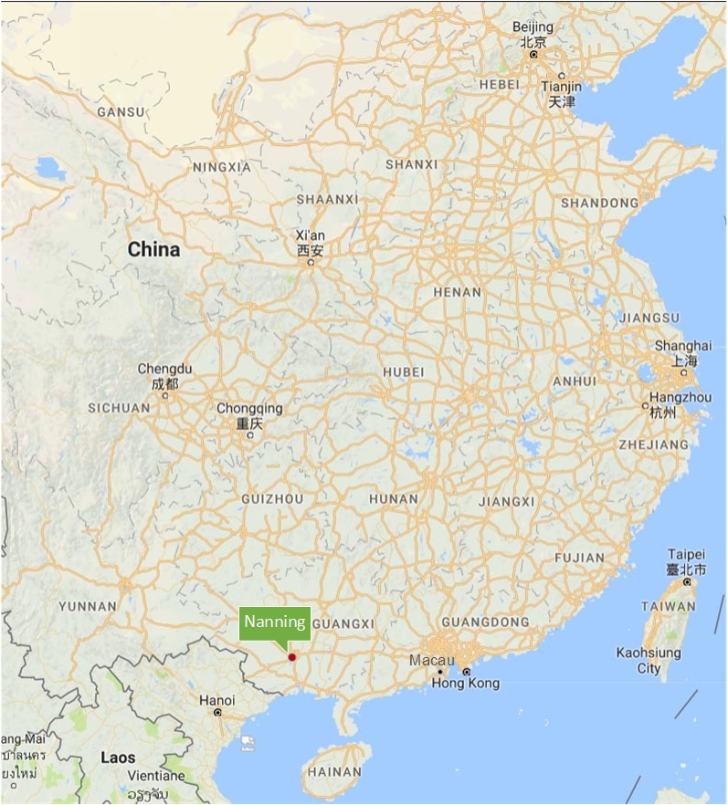

{kind=link}
Conference Venue
The conference is organized by Guangxi University for Nationalities, founded in 1952 and located in Nanning, Guangxi Zhuang Autonomous Region, southern China. The university has two campuses covering an area of 132 hectares and a student population of 19707, with 33 majors ranging from arts and economics to science and engineering. It has become one of national research centers on nationalities, especially the ethnic groups in the autonomous region and Southeast Asia.
|   |
The conference will take place at the Landmark Hotel which is near both Guangxi University for Nationalities and Guangxi University.
For more information and tips, proceed to accommodation page.
Visa Application
If you need an official invitation letter for visa application, please send your request to Jing Yang with the following information:
- Name, as it appears on your passport
- Affiliation
- Mailing address
- Reason for attending ADG 2018 (PC member, author, guest)
- If you intend to stay in China longer than the conference dates (September 11 – 14, 2018), indicate the dates.
A scanned electronic copy of the invitation letter will be sent to you via e-mail. A hard copy will be sent to you by mail as well, if necessary.
Travelling to Nanning
There are several options flying to Nanning, which provide an opportunity for interesting stop-overs before or after the conference:
- Beijing
- Shanghai
- Hong Kong
- Macau
*The 13th International Conference on Artificial Intelligence and Symbolic Computation (AISC 2018) will be held in Suzhou from September 16 to September 19, 2018 (September 16 is for on-site registration of participants). If you wish to participate in the conference, you can visit Travel tips for AISC 2018. You can also visit www.trip.com to query and book flights and trains in China.
Conference Excursions
After the conference, two excursions to the following destinations will take place:
One-day excursion to Beihai (on September 15)
|  | Beihai is famous for its beautiful silver beach. Beihai is about 220 km away from Nanning, which takes about 3 hours by coach or 1.5 hours by train. The visitors will see the old streets and the silver beach in Beihai. www.travelchinaguide.com |
Two-day excursion to Guilin (on September 15-16)
| Guilin is one of China's most popular tourist destinations. Guilin is about 430 km away from Nanning, which takes about 5 hours by coach or 3 hours by train. The preliminary plan is the following. On the evening of September 14, the visitors will travel from Nanning to Guilin and visit the Elephant Trunk Mountain in the city of Guilin on September 15. On the evening of September 15 it is planned to travel from Guilin to Yangshuo and visit Li river and Moon Mountain on September 16. On the afternoon of September 16 the visitors may travel back to Nanning or travel to other destinations. https://www.lonelyplanet.com/china/guangxi/guilin |
You may indicate an excursion along with registration to the conference.
Location Map
|  |
Beijing
"As one of the six ancient cities in China, it has been the heart and
soul of politics and society throughout its long history and
consequently there is an unparalleled wealth of discovery to delight
and intrigue travelers as they explore the city's ancient past and
exciting modern development." www.travelchinaguide.com
More information: english.visitbeijing.com.cn
Shanghai
"In addition to its modernization, the city's multicultural flair
endows it with a unique glamour. Here, one finds the perfect blend of
cultures, the modern and the traditional, and the western and the
oriental." www.travelchinaguide.com
More information: www.meet-in-shanghai.net
Hong Kong
"Build a modern city on an ancient civilisation, put it at an intersection of cultures, and you get a place that is truly worth exploring. Dive into a festival, hike a mountain trail, catch a show, visit a temple, explore a walled village..." www.discoverhongkong.com
Macau
"Best known globally as the 'Vegas of China', the Macau Special Administrative Region is indeed a mecca of gambling and glitz. But the city is so much more than that. A Portuguese colony for more than 300 years, it is a city of blended cultures. Ancient Chinese temples sit on streets paved with traditional Portuguese tiles. The sound of Cantonese fills the air on streets with Portuguese names. You can eat Chinese congee for breakfast, enjoy a Portuguese lunch of caldo verde soup and bacalhau (cod) fritters, and dine on hybrid Macanese fare such as minchi (ground beef or pork, often served over rice)."
www.lonelyplanet.com/china/macau
More information: en.macaotourism.gov.mo
Approximate travel time to Nanning
| From Beijing: | 3:40h direct flight |
| From Shanghai: | 3:30h direct flight |
| From Hong Kong: | 2:00h direct flight |
| From Macau: | 1:30h direct flight |
Average temperatures in September
| Beijing: | 14°C – 26°C |
| Shanghai: | 20°C – 28°C |
| Hong Kong: | 25°C – 31°C |
| Macau: | 25°C – 30°C |
| Nanning: | 24°C – 32°C |